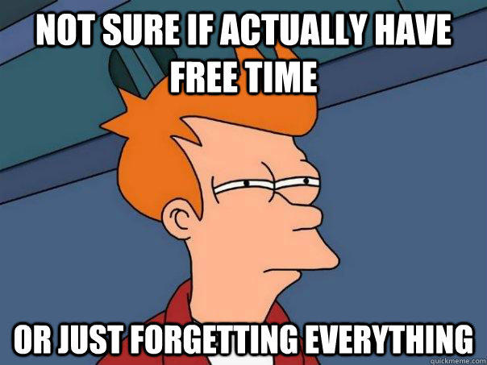

<!doctype html>
<html lang="en">
    <head>
        <meta charset="utf-8">
        <title>reveal-md</title>
        <link rel="stylesheet" href="css/reveal.css">
        <link rel="stylesheet" href="css/theme/black.css" id="theme">
        <!-- For syntax highlighting -->
        <link rel="stylesheet" href="lib/css/zenburn.css">

        <!-- If the query includes 'print-pdf', use the PDF print sheet -->
        <script>
          document.write( '<link rel="stylesheet" href="css/print/' + ( window.location.search.match( /print-pdf/gi ) ? 'pdf' : 'paper' ) + '.css" type="text/css" media="print">' );
        </script>
    </head>
    <body>

        <div class="reveal">
            <div class="slides"><section  data-markdown><script type="text/template"># Technische Informatik

<small>by Simon Selg, Danny Stoll, Felicitas Ritter, Leonie Feldbusch</small>
</script></section><section  data-markdown><script type="text/template">
## Das Tutorat

- Email: Siehe Übungsportal
- [https://ti-tutorial.github.io/](https://ti-tutorial.github.io/)

</script></section><section  data-markdown><script type="text/template">
## Kennenlernrunde

- Studiengang
- Vorherige Tätigkeit

</script></section><section ><section data-markdown><script type="text/template">
## Organisatorisches


</script></section><section data-markdown><script type="text/template">
### Ansprechpersonen

- Tutor
- Assistenten
  - [Dr. Sven Reimer](https://ira.informatik.uni-freiburg.de/src/team_view.php?teamID=59)
  - [Pascal Raiola](https://ira.informatik.uni-freiburg.de/src/team_view.php?teamID=82)
- Dozenten
  - [Dr. Tobias Schubert](https://ira.informatik.uni-freiburg.de/src/teach_persons.php?id=190)
  - [Dr. Ralf Wimmer](https://ira.informatik.uni-freiburg.de/src/team_view.php?teamID=40)

</script></section><section data-markdown><script type="text/template">
### Infrastruktur

- [Vorlesungsseite](https://ira.informatik.uni-freiburg.de/src/teach_main.php?id=190)
- [Übungsportal](https://webira.informatik.uni-freiburg.de/cgi-bin/teaching/ti-ws1617/login.cgi)
- [Ilias](https://ilias.uni-freiburg.de/login.php)
  - Aufzeichnungen
  - Folien
  - Forum
</script></section><section data-markdown><script type="text/template">
### Die Übungsblätter

- Freitags 17:00 Abgabe
- Freitags Ausgabe
- [Übungsportal](https://webira.informatik.uni-freiburg.de/cgi-bin/teaching/ti-ws1617/login.cgi)
</script></section><section data-markdown><script type="text/template">
### Probeklausur

- 12.01.2017
- Nach TI-Vorlesung
- Zählt wie 2 Übungsblätter (40 Pkt.)
</script></section><section data-markdown><script type="text/template">
### Studienleistung

- Anwesenheit
- 50% _oder_ 140 Punkte aus Übungen
- Vorrechnen

</script></section><section data-markdown><script type="text/template">
### Plagiate


</script></section></section><section ><section data-markdown><script type="text/template">
## Vorlesungsinhalte


</script></section><section data-markdown><script type="text/template">
### Mathematische Grundlagen

- Mathevorkurs: [Skript](https://fachschaft.tf.uni-freiburg.de/erstsemester/mathevorkurs/mathevorkurs/skript-mathevorkurs/at_download/file), [Aufgaben](https://fachschaft.tf.uni-freiburg.de/erstsemester/mathevorkurs/mathevorkurs/aufgaben-mathevorkurs/at_download/file) und [Lösungen](https://fachschaft.tf.uni-freiburg.de/erstsemester/mathevorkurs/loesungen/at_download/file)
- Induktionsbeweis
</script></section></section><section ><section data-markdown><script type="text/template">
## Klausur
</script></section><section data-markdown><script type="text/template">
### Klausurdatenbank

- Über die [Fachschafts-Website](http://db.fachschaft1.tf.uni-freiburg.de/exams/search/course/289/examType/1/degree/14)
- Altklausuren
- Fragenkataloge
- Zusammenfassungen
</script></section><section data-markdown><script type="text/template">
### Aufgabentypen

- _Algorithmisch_ / _Verfahren_
- Wissens-/_Verständnisfragen_
- _Beweise_
  - Auswendig gelernt
  - Knobeln
- Analytisches rechnen

</script></section><section data-markdown><script type="text/template">
### Klausureinsicht

- Gleich wichtig wie die Klausur selbst (!)
- Vertretung möglich

</script></section></section><section  data-markdown><script type="text/template">
## Quellen

- [yoda-meme](http://www.quickmeme.com/img/e9/e9b82533f50538f4d36656f24bf2afb39642223033cd19d52ef1eea5b03ab1bf.jpg)
- [plagiator](https://i76.photobucket.com/albums/j14/glambarbarian/Plagiator2.jpg)
- [fry](http://www.quickmeme.com/meme/3oka26)
</script></section></div>
        </div>

        <script src="lib/js/head.min.js"></script>
        <script src="js/reveal.js"></script>

        <script>
            function extend() {
              var target = {};
              for (var i = 0; i < arguments.length; i++) {
                var source = arguments[i];
                for (var key in source) {
                  if (source.hasOwnProperty(key)) {
                    target[key] = source[key];
                  }
                }
              }
              return target;
            }

            // Optional libraries used to extend on reveal.js
            var deps = [
              { src: 'lib/js/classList.js', condition: function() { return !document.body.classList; } },
              { src: 'plugin/markdown/marked.js', condition: function() { return !!document.querySelector('[data-markdown]'); } },
              { src: 'plugin/markdown/markdown.js', condition: function() { return !!document.querySelector('[data-markdown]'); } },
              { src: 'plugin/highlight/highlight.js', async: true, callback: function() { hljs.initHighlightingOnLoad(); } },
              { src: 'plugin/notes/notes.js', async: true, condition: function() { return !!document.body.classList; } },
              { src: 'plugin/math/math.js', async: true },
              { src: 'plugin/math/math.js', async: true }
            ];

            // default options to init reveal.js
            var defaultOptions = {
              controls: true,
              progress: true,
              history: true,
              center: true,
              transition: 'default',
              dependencies: deps,
              math: {
                mathjax: 'https://cdn.mathjax.org/mathjax/latest/MathJax.js',
                config: 'TeX-AMS_HTML-full'
              }
            };

            // options from URL query string
            var queryOptions = Reveal.getQueryHash() || {};

            var options = {};
            options = extend(defaultOptions, options, queryOptions);
            Reveal.initialize(options);
        </script>

          <script src="/scripts/ti-presentation-ws-2016"></script>
    </body>
</html>
